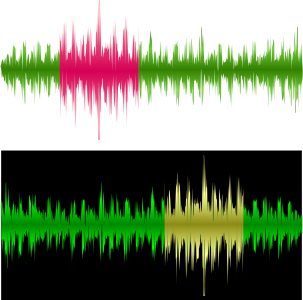
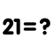
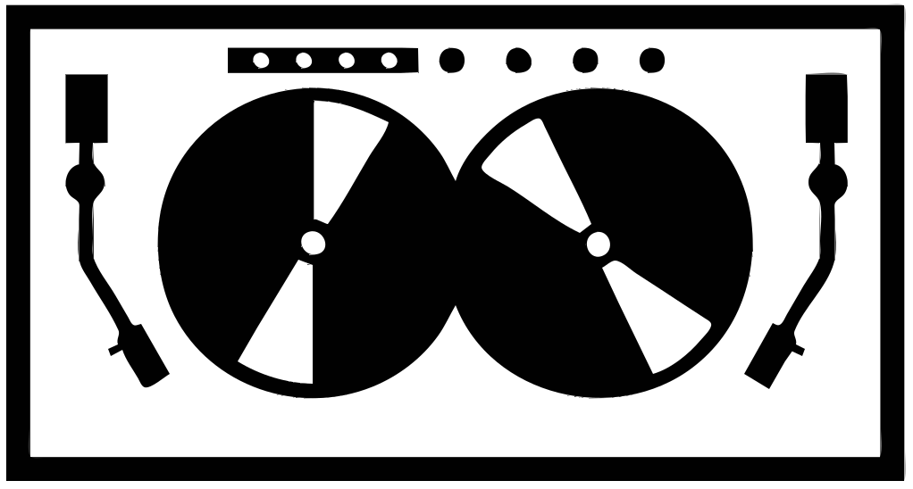
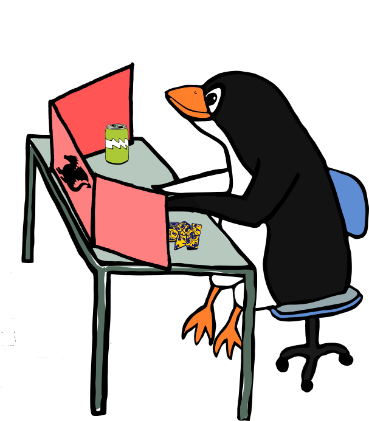

|
Recompensa |
Descrição |
XP |
 |
Keen hearing |
Analisou o efeito da quantização nos sinais de áudio |
30 |
| |
Sinal fake |
Verificou o efeito de aliasing |
30 |
| |
Expert em sinais |
Resolveu os 10 exercícios de sinais |
20 |
| |
Explorador de ambiente |
Mediu a resposta acústica de um ambiente |
50 |
| |
Som lento |
Encontrou a reposta ao impulso de um ambiente com o maior atraso |
20 |
 |
Detetive do som |
Encontrou posição da fonte de som em um áudio estéreo |
50 |
|  |
Perito do som |
Usou amplitude em conjunto com o tempo para analisar a posição da fonte |
30 |
| |
Inspetor do coração |
Aplicou a autocorrelação para obter batimento cardíaco de um sinal de PPG |
30 |
| |
Aprendiz docente |
Gravou vídeo aula explicando o que é convolução para leigos |
30 |
|  |
Mestre do cálculo |
Resolveu os 10 exercícios de convolução |
30 |
|  |
DJ júnior |
Criou seu próprio mixer de som |
50 |
| |
Filter developer |
Criou seus filtros passa alta e passa baixa |
50 |
| |
Sound expert |
Construiu seu próprio equalizador digital (mínimo de 4 faixas) |
50 |
|  |
Gran master do som |
Criou seu próprio normalizador de som |
100 |
| |
Gran master da modelagem |
Analisou o equalizador no espaço de estados |
50 |
 |
O(A) Idealizador(a) |
Propôs uma atividade prática completa sobre um dos tópicos da disciplina |
30 |
| |
O(A) Ajudante |
Ajudou membro de outra equipe em alguma atividade da disciplina |
20 |
 |
O(A) Corretor(a) |
Encontrou erro no material da disciplina |
20 |
 |
Detetive do youtube |
Encontrou erro em vídeo aula do youtube relacionado a disciplina |
20 |
| |
Aluno(a) exemplar |
Foi pontual (máximo de 15 minutos de atraso) em todas as aulas do módulo |
20 |